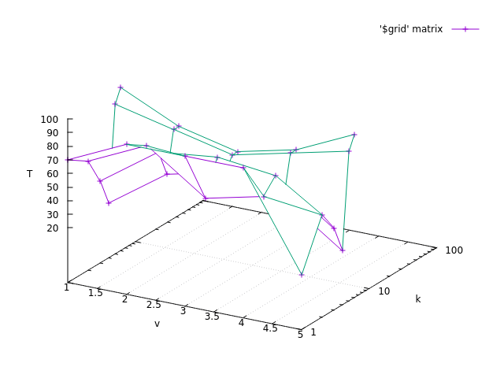

NMODL
This document describes how to use the NBSR model description language to add membrane mechanisms to NEURON.
NEURON’s extensions to the NBSR language are described in:
Model Description Language
Introduction
The kinds of mechanisms that can be added are:
Channels in which the model consists of current-voltage relationships.
Calculation of internal and external ionic concentration changes due to currents carried by specific ions.
Many user defined mechanisms can be simultaneously “insert”ed into sections in NEURON; NEURON will keep track of the total current for each ionic species used and the effect of that current on the membrane potential. For example, suppose a calcium pump, sodium-calcium exchanger, calcium channel, radial calcium diffusion, and calcium activated potassium mechanisms are inserted into a cable section. Then the total calcium current is calculated as the sum of the individual currents from the calcium pump, exchanger, and channel. The internal calcium concentration just under the membrane is calculated from the total calcium current and diffusion away from the surface. The potassium current through the cagk channel is calculated from the internal calcium concentration next to the membrane and the membrane potential. And the membrane potential is calculated from the total current. (The above is only a partial list of the interactions among these channels. The point is that the ionic current, membrane voltage, and concentration computations are consistent regardless of the channels inserted into the cable section.)
Mechanisms are normally local. That is they do not depend on what is happening at other places on the neuron. However, a method exists for writing mechanisms that depend on variables of mechanisms at other locations. For example the calcium concentration at a presynaptic mechanism can be used to calculate the conductance change at a postsynaptic mechanism. (See, Importing variables from other mechanisms.) Also, FUNCTION’s written in a model are global and may be used in other models if they do not involve range variables.
History
MODL (model description language) was originally developed at the NBSR (National Biomedical Simulation Resource) to specify models for simulation with SCoP (Simulation Control Program). With MODL one specifies a physical model in terms of simultaneous nonlinear algebraic equations, differential equations, or kinetic schemes. MODL translates the specification into the C language which is then compiled and linked with the SCoP program. It turned out that only modest extensions to the MODL syntax were necessary to allow it to translate model descriptions into a form suitable for compiling and linking with NEURON V2. The extended version was called NMODL. In NEURON V3 the advent of the object oriented interpreter, OC, allowed Point Processes to be treated as objects instead of parallel arrays of variables. The model description translator that emits code suitable for NEURON V3 is called NOCMODL. NMODL and NOCMODL handle identical input model descriptions, they differ merely in the output interface code. A prototype model description translator has been written to generate code suitable for linking with GENESIS.
This document discusses only the differences between NMODL and MODL. A complete user manual for the standard model description language is available from NBSR. A brief description of MODL is in the document entitled, “SCoP Language Summary”.
Usage
The easiest way to write membrane mechanisms is by analogy with the examples. The example files come in pairs with a .mod and .hoc extension. Models (membrane mechanisms) are linked into neuron with the command:
nrnivmodl file1 file2 file3 ...
In the list of .mod files you do not type the extension, only the prefix.
If there are no files specified then nrnivmodl will use all the
mod files in the current working directory. When nrnivmodl is finished, there
will exist a version of NEURON called special which contains those
membrane mechanisms described in the files. special should be renamed
to something more suitable. The associated .hoc files can be executed by
special to test various aspects of the models.
It is extremely important that mechanisms have consistent units. To ensure this use the command:
modlunit file
leaving off the file extension. For more information about units click here.
Rationale
Our first nerve simulation program, CABLE, contained several built-in membrane mechanisms, including radial calcium diffusion, calcium channel, calcium activated potassium channel, calcium pump, etc. However, in practice, only the Hodgkin-Huxley squid channels were enough of a standard to be used “as is” across more than one series of simulations. The other channels all required some type of modification to be useful as new situations arose. Sometimes the modifications were minor, such as changing the coordinate system for radial calcium diffusion so that there were more compartments near the membrane, but often we were forced to add an entirely new mechanism from scratch such as Frankenhaeuser-Huxley channels for Xenopus node. The problem was greatly compounded for other users of CABLE who needed to add new channels but were not familiar with the numerical issues or the detailed interface requirements. NMODL with NEURON is a significant improvement over CABLE with regard to adding new membrane mechanisms:
Interface details are handled automatically.
Consistency of units is ensured. (By checking with modlunit.)
Mechanisms described by a kinetic scheme are written with a syntax in which the reactions are clearly apparent.
There is often a great increase in clarity since statements are directly related to discourse at the model level instead of the C programming level.
The high level description language often provides a great deal of leverage in that one model statement can get translated into very many C statements. For example, kinetic reaction statements get translated into statements which explicitly calculate sparse jacobian matrix coefficients.
At the same time, since the model description is translated into C, the computation speed remains the same or better than a hand coded mechanism in CABLE.
General Paradigm
Membrane mechanisms deal with currents, concentrations, potentials, and state variables and it is helpful to know how NEURON treats these variables in order to correctly write a new membrane mechanism.
NEURON integrates its equations using the function fadvance().
During a call to this function the value of the global time variable, t,
is increased by the value of dt (t = t + dt),
and all the voltages, currents,
concentrations, etc. are changed to new values appropriate to the new
value of time. The default numerical method used by NEURON produces
values which have an error proportional to dt. That is, it makes
no sense to ask at what time in the interval are the values most accurate.
However, by setting the global variable
secondorder equal to 2, the values produced by fadvance have
errors proportional to dt^2 and it is important to realize that
membrane potential is second order correct at time,
t.currents are second order correct at time,
t - dt/2.channel states are second order correct at time,
t + dt/2;.concentrations are second order correct at time,
t.
fadvance() goes about its business by first setting up the current
conservation matrix equation to be used in the calculation of membrane
potential. To do this it calls the current functions for each mechanism
in each segment which compute conductance using the old values of states
and current using the old values of states and membrane potential.
The value of time when the BREAKPOINT block is called is t+dt/2 so models
which depend explicitly on time will be second order correct if they use
the value of t.
fadvance() then solves the matrix equation for the new value of the membrane
potential. Depending on the value of secondorder it then
may re-call these current functions with the average of the new and old
membrane potentials to get an accurate final value of the current.
It then calls the state integrator functions using the new
value of the membrane potential and the second order correct currents
to calculate the new values of the states. The details of this method
can be gleaned from the file nrn/src/nrnoc/fadvance.c.
It is therefore necessary for NMODL to divide up the statements properly into a current function and a state function. It also has to create the interface between model variables and NEURON and create a memory allocation function so that segments have separate copies of each variable. Finally, it has to make sure that local model currents get added to the correct global ionic currents.
Note: This simulation method is very effective and
highly efficient when currents depend on
membrane potential and ionic concentrations do not change on the
same time scale as the membrane potential. When these conditions
are not met, however, such as in a calcium pump mechanism in which
the current depends on the concentrations of calcium next to the
membrane, one must be careful to use a dt small enough to
prevent the occurrence of numerical instabilities. (Or else using a single
model to describe both the pump current and that current’s effect on concentration
so that the concentrations and pump states may be computed simultaneously.
An example of such a model is in nrn/demo/release/cabpump.mod)
A future version of
NEURON will have the option (slightly less efficient) of calculating
all state variables simultaneously so that numerical stability is
guaranteed.
Further discussion of the numerical methods used by NEURON are found here.
Basic NMODL Statements
Only a small part of the full model description language is relevant to neuron mechanisms. The important concepts held in common are the declaration of all variables as
TITLE
- Description:
Title of the mechanism. Doesn’t play any role to the code generation.
COMMENT
- Description:
Comments of the code.
COMMENTblocks start withCOMMENTand end withENDCOMMENT. For example:COMMENT Some text here. ENDCOMMENTSingle line comments can be added to the mod file also with
:or?. For example:NEURON { : This is a single line comment ? This is a single line comment as well GLOBAL a }
DEFINE
- Description:
Defines an integer macro variable. The name of the variable can be used in the rest of the mod file and its name will be replaced by its value during parsing of the mod file. Syntax is:
DEFINE <variable_name> <integer_value>
UNITS
- Description:
The statements in the UNITS block define new names for units in terms of existing names in the UNIX units database. This can increase legibility and convenience, and is helpful both as a reminder to the user and as a means for automating the process of checking for consistency of units. The UNIX units database (based on the 2019 updated NIST constants) taken into account is defined in the nrnunits.lib file.
New units can be defined in terms of default units and previously defined units by placing definitions in the UNITS block. e.g.
UNITS { (uF) = (microfarad) (Mohms) = (megohms) (V) = (volt) (molar) = (/liter) (mM) = (millimolar) }and it is more convenient to define
CONSTANTconstants in the UNITS block rather than in theCONSTANTSblock — there is less chance of a typo, and they do not appear in SCoP where they can be inadvertently changed. For example:UNITS { F = (faraday) (coulomb) PI = (pi) (1) e = (e) (coulomb) R = (k-mole) (joule/degC) C = (c) (cm/sec) }Here,
Cis the speed of light in cm/sec andRis the Gas constant. Constant factors are defined in the UNITS block in the following manner.UNITS { F = 96520 (coul) PI = 3.14159 () foot2inch = 12 (inch/foot) }TODO: Add existing example mod file
PARAMETER
- Description:
These are variables which are set by the user and not changed by the model itself. In a NEURON context some of these parameters need to be range variables which can vary with position and some are more useful as global variables. Special variables to NEURON such as
celsius,area,v, etc. if used in a model should be declared as parameters. (and you should not assign values to them in the model). Ionic concentrations, currents, and potentials that are used but not set in this particular model should be declared as parameters. NMODL does not enforce the “constantness” of parameters but stylistically it is a good rule to follow since there is a special field editor widget in NEURON’s graphical user interface which makes it easier to modify a PARAMETER’s value. There is an unfortunate restriction on PARAMETER’s in that they cannot declare arrays. Even if an array is conceptually a PARAMETER, it must be declared as an ASSIGNED variable. In NMODL, PARAMETERS and ASSIGNED variables are practically synonyms. They substantively differ only in that when a panel of variables is automatically created, PARAMETERS are displayed in augmented field editors which make it easier to change values whereas ASSIGNED variables are displayed in field editors in which the only way to change the value is to type it from the keyboard. (seexvalue()).
STATE
- Description:
These are variables which are the unknowns in differential and algebraic equations. They are normally the variables to be “SOLVE”ed for within the BREAKPOINT block. For example, in HH channels the states are m, h, and n. In a NEURON context they are always range variables. Ionic concentration is a state only if the concentration is being calculated within that specific model (mechanism). ERRORS in the simulation would occur if concentrations were computed in more than one mechanism inserted at the same location. Membrane potential,
v, is never a state since only NEURON itself is allowed to calculate that value.
ASSIGNED
- Description:
These are variables which can be computed directly by assignment statements and are important enough that you may wish to know their value during a simulation. In a NEURON context you will wish to divide them between range variables and global variables.
CONSTANT
- Description:
As the name suggests, this block represents variables with constant values. Unlike other variables (e.g. PARAMETER or ASSIGNED), these variables can not be set or accessed via Python/HOC interface. Also, they can have only one value across for all instances of a given mechanism.
CONSTANT { e0 = 1.6021e-19 (coulombs) q10 = 2.70 }
The current implementation allows changing the value of a constant variable in other blocks (e.g. in like PROCEDURE, INITIAL) but such usage is discouraged. One can use other variable types like GLOBAL, PARAMETER or UNITS to achieve the same purpose.
LOCAL
- Description:
These variables are defined within a local scope of a block or MOD file. A user can only access a local variable inside the function or MOD file but never from outside using HOC/Python API.
FUNCTION oca_ss(v(mV)) { LOCAL a, b a = 1(1/ms)*efun(.1(1/mV)*(25-v)) b = 4(1/ms)*exp(-v/18(mV)) oca_ss = a/(a + b) }
INDEPENDENT
- Description:
This specifies the mathematical independent variable. For NMODL this statement is unnecessary since the independent variable is always time,
t.
POINTER
Basically what is needed is a way to implement the Python statement
section1(x1).mech1.var1 = section2(x2).mech2.var2
efficiently from within a mechanism without having to explicitly connect them
through assignment at the Python level everytime the var2 might change.
First of all, the variables which point to the values in some other mechanism are declared within the NEURON block via
NEURON {
POINTER var1, var2, ...
}
These variables are used exactly like normal variables in the sense that they can be used on the left or right hand side of assignment statements and used as arguments in function calls. They can also be accessed from HOC just like normal variables. It is essential that the user set up the pointers to point to the correct variables. This is done by first making sure that the proper mechanisms are inserted into the sections and the proper point processes are actually “located” in a section. Then, at the Python level each POINTER variable that exists should be set up via the command:
mechanism_object._ref_somepointer = source_obj._ref_varname
Here mechanism_object (a point process object or a density mechanism) and
the other arguments
have enough implicit/explicit information to
determine their exact segment and mechanism location. For a continuous
mechanism, this means the section and location information. For a point
process it means the object. The reference may also be to any NEURON variable
or voltage, e.g. soma(0.5)._ref_v.
See nrn/share/examples/nrniv/nmodl/(tstpnt1.py and tstpnt2.py) for examples of usage.
For example, consider a synapse which requires a presynaptic potential in order to calculate the amount of transmitter release. Assume the declaration in the presynaptic model
NEURON { POINTPROCESS Syn POINTER vpre }
Then
syn = h.Syn(section(0.8))
syn._ref_vpre = axon(1)._ref_v
will allow the syn object located at section(0.8) to know the voltage at the distal end of the axon
section. As a variation on that example, if one supposed that the synapse
needed the presynaptic transmitter concentration (call it tpre) calculated
from a point process model called “release” (with object reference
rel, say) then the
statement would be
syn._ref_trpe = rel._ref_ACH_release
The caveat is that tight coupling between states in different models
may cause numerical instability. When this happens,
merging models into one larger
model may eliminate the instability, unless the model is so simple that time
does not appear, such as a passive channel. In that case, v is normally
chosen as the independent variable. MODL required this statement but NMODL
will implicitly generate one for you.
When currents and ionic potentials are calculated in a particular model they
are declared either as STATE, or ASSIGNED depending on the nature
of the calculation or whether they are important enough to save. If a variable
value needs to persist only between entry and exit of an instance
one may declare it as LOCAL, but in that case the model cannot be vectorized
and different instances cannot be called in parallel.
Note
For density mechanisms, one cannot pass in e.g. h.hh as this raises a TypeError;
one can, however, pass in nrn.hh where nrn is defined via from neuron import nrn.
INCLUDE
- Description:
The INCLUDE statement replaces itself with the contents of the indicated file. eg.
INCLUDE "units.inc"
If the full path to the file is not given, the file is first looked for in the current working directory, then in the directory where the original .mod file was located, and then in the directories specified by the colon separated list in the environment variable MODL_INCLUDES. Notice that the INCLUDE filename explicitly requires a complete file name — don’t leave off the suffix, if any. Note that if one is redefined in the included file or the file that includes another one, then the generated code has the corresponding code to both blocks with the order of their inclusion.
TODO: Add existing example mod fileOther blocks which play similar roles in NMODL and MODL are
BREAKPOINT
- Description:
This is the main computation block of the model. Any states are integrated by a SOLVE statement. Currents are set with assignment statements at the end of this block. Think of this block as making sure that on exit, all variables are consistent at time,
t. The reason this block is named BREAKPOINT is because in SCoP it was called for each value of the INDEPENDENT variable at which the user desired to plot something. It was responsible for making all variables consistent at that value of the INDEPENDENT variable (which usually required integrating states from their values at the previous call using SOLVE statements). In NMODL, this block is usually called twice every time step (with voltage equal to v+.001 and voltage equal to v) in order to calculate the conductance from the currents. Often, errors result if one computes values for states in this block. All states depending explicitly or implicitly on time should only be changed in a block called by a SOLVE statement.
DERIVATIVE
- Description:
If the states are governed by differential equations, this block is used to assign values to the derivatives of the states. Such statements are of the form
y' = expr. These equations are normally integrated from the old values of the states to their new values at time,t, via a SOLVE statement in the BREAKPOINT block. The expression may explicitly involve time. The SOLVE statement for a DERIVATIVE block should explicitly invoke eitherSOLVE deriv METHOD euler or SOLVE deriv METHOD runge or SOLVE deriv METHOD derivimplicitbecause the default integration method is a variable time step runge-kutta method which cannot work in a NEURON context. The first two methods above are computationally cheap but are numerically unstable when equations are stiff (states vary a lot within a
dtstep).HH type mechanisms have state equations which are particularly simple and extra efficiency and accuracy is easily obtained by integrating the states analytically. The
hh2.modexample shows how to do this.
NET_RECEIVE
- Description:
The NET_RECEIVE block is called by the NetCon event delivery system when an event arrives at this postsynaptic point process. For example:
STATE { g (microsiemens) } NET_RECEIVE(weight (microsiemens)) { g = g + weight }In this case the value of the weight is specified by the particular NetCon object delivering the event, and this value increments the conductance state.
TODO: Add existing example mod file
WATCH
- Description:
TODO: Add description and existing example mod file
CONSTRUCTOR
- Description:
CONSTRUCTOR { : ... }
This block is executed at the beginning and before the INITIAL block when the simulator allocates the memory for a given mechanism. As this block is executed only once, it is typically used for memory allocation and initialization of custom data structures (e.g. file I/O with VERBATIM blocks). You can find examples on ModelDB models like ModelDBRepository/136095.
DESTRUCTOR
- Description:
DESTRUCTOR { : ... }
This block is executed at the end of execution when simulator cleanups all mechanisms. Similar to CONSTRUCTOR, this block is executed only once and is typically used to finalize and deallocate custom data structures that are allocated in CONSTRUCTOR block. You can find examples on ModelDB models like ModelDBRepository/136095.
LINEAR
- Description:
TODO: Add description and existing example mod file
NONLINEAR
- Description:
This block solves simultaneous equations in the form of a list of statements with the syntax,
~ expr = expr
When this block is called by the SOLVE statement, the values of the states are computed so that the equations are true. The default method used is Newton’s method. These kinds of equations can also appear within a DERIVATIVE block.
KINETIC
- Description:
This block specifies a sequence of chemical reactions. The default method used is backwards euler which is very stable but only first order correct. If the SOLVE statement specifies a “METHOD sparse” the method is still backwards euler but the computation may be much faster.
CONSERVE
- Description:
This statement’s fundamental idea is to systematically account for conservation of material. When there is neither a source nor a sink reaction for a STATE , the differential equations are not linearly independent when calculating steady states (dt approaches infinity). Steady states can be approximated by integrating for several steps from any initial condition with large dt, but roundoff error can be a problem if the Jacobian matrix is nearly singular. To solve the equations while maintaining strict numerical conservation throughout the simulation (no accumulation of roundoff error), the user is allowed to explicitly specify conservation equations with the CONSERVE statement. The CONSERVE statement does not add to the information content of a kinetic scheme and should be considered only as a hint to the translator. The NMODL translator uses this algebraic equation to replace the ODE for the last STATE on the left side of the equal sign. If one of the STATE names is an array, the conservation equation will contain an implicit sum over the array. If the last STATE is an array, then the ODE for the last STATE array element will be replaced by the algebraic equation. The choice of which STATE ODE is replaced by the algebraic equation is implementation-dependent and does not affect the solution (to within roundoff error). If a CONSERVEd STATE is relative to a compartment size, then compartment size is implicitly taken into account for the STATEs on the left hand side of the CONSERVE equation. The right hand side is merely an expression, in which any necessary compartment sizes must be included explicitly.
TODO: Add existing example mod file
COMPARTMENT
- Description:
The compartment volumes needed by the KINETIC scheme are given using the
COMPARTMENTkeyword. The syntax of this construct is:COMPARTMENT volume {state1 state2 . . . }where the STATE s named in the braces have the same compartment volume given by the volume expression after the COMPARTMENT keyword. In case a mechanism involves many compartments whose relative volumes are specified by the elements of an array the syntax is:
COMPARTMENT index, volume [ index ] { state1 state2 . . . }where the STATEs that are diffusing are listed inside the braces.
LONGITUDINAL_DIFFUSION
- Description:
This statement specifies that this mechanism includes nonlocal diffusion, i.e. longitudinal diffusion along a section and into connecting sections. The syntax for scalar STATEs is:
LONGITUDINAL_DIFFUSION flux_expr { state1 state2 . . . }where
flux_expris the product of the diffusion constant and the cross-sectional area between adjacent compartments. Units of theflux_exprmust be (\(micron^4 /ms\)), i.e. the diffusion constant has units of (\(micron^2 /ms\)) and the cross-sectional area has units of (\(micron^2\)). For cylindrical shell compartments, the cross-sectional area is just the volume per unit length. If the states are arrays then all elements are assumed to diffuse between corresponding volumes in adjacent segments and the iteration variable must be specified as in:LONGITUDINAL_DIFFUSION index , flux_expr ( index ) { state1 state2 . . . }
PROCEDURE
- Description:
Procedures normally do not return a value but are called for their side effects, eg, the setting of variables. Procedures are callable from NEURON by the user.
However if a procedure is called by the user, and it makes use of any range variables, then the user is responsible for telling the mechanism from what location it should get its range variable data. This is done with the Python function:
h.setdata_mechname(x)
where
mechnameis the mechanism name. For range variables one must of course pass in asec=sectionargument (otherwise the so-called currently accessed section, discoverable via h.cas(), is used). In the case of Point processes, one calls procedures using the object notationpp_objref.procname()
In this case procname uses the instance data of the point process referenced by pp_objref.
Sometimes, state equations are so simple, e.g. HH states, that significant efficiency gains and extra accuracy are obtainable by a special integration procedure. In this case the procedure can be called by a SOLVE statement and actually integrates the states (but don’t call it directly at the user level!). If a PROCEDURE is solved by a SOLVE statement it may return an error code (By default it returns an error code of 0 which denotes success.) To return a non-zero error code use the idiom
VERBATIM return ...; ENDVERBATIM
FUNCTION
- Description:
This block can be called at either the user level or from within the model description. Functions return a double precision value. Functions can also be called from other models. When the calling model is translated a warning will be generated. Just be sure to load all needed models. Use the suffix of the model where the function is declared. The user level caveats stated for procedures apply.
TABLE
- Description:
The TABLE statement is very useful in a NEURON context because of the potentially great increase in speed of simulation. Often rate functions are complicated functions of the voltage and it is very expensive to calculate their values over and over at every segment. By using tables of rate coefficients, it is not uncommon to improve simulation speed by a factor of 5.
In the context of a PROCEDURE taking one argument, TABLE has the syntax
TABLE variables DEPEND dependencies FROM lowest TO highest WITH tablesize
where:
variablesis a list of variable names each of which will have itsown table,
dependenciesis a list of parameters that, when any of them changes theirvalue, cause the tables to be recalculated,
lowestis the least arg value for the first table entry,highestis the greatest arg value for the last table entry, andtablesizeis the number of elements in each table.
Note that, for a FUNCTION,
variablesshould remain empty as the only interpolated value is the value of the function at the argument itself, i.e. ifargis an argument passed to a FUNCTION, thenvariablesis always implicitly set toarg, and no further variables are allowed. Also note that a FUNCTION or a PROCEDURE with a TABLE statement must take exactly one input argument.Each model (with a suffix name
<suffix>) that has a table also has a flag associated with it that can be changed by the user calledusetable_<suffix>which specifies that the tables are to be used (1, default) or not used (0).With
usetable_<suffix> = 0, when the procedure is called it ignores the tables and just computes the values using the assignment statements as any normal procedure.With
usetable_<suffix> = 1, when the procedure is called, the arg value is used to assign values to thevariablesby looking them up in the tables; the time normally spent executing the assignment statements is saved. If the tables are out of date (any of thedependencieshas a different value from its value the last time the tables were constructed) or have never been created, the tables are created.Note that updating tables with
tablesize=200is equivalent to calling the procedure 200 times with different values of the argument. This investment is only repaid if the tables remain valid for many more than 200 subsequent calls to the procedure and if the calculation takes more time than an interpolated table lookup.Also note that, if
usetable_<suffix> = 1, for any argument value outside of the interpolation range, the returned value of a function with a TABLE will always be the value at the boundary. In mathematical form, assuming the table interpolates values in the range[a, b]:\[\begin{split}f(x) = \begin{cases} f(a),\, &x \lt a \\ f(b),\, &x \gt b \end{cases}\end{split}\]
INITIAL
- Description:
The INITIAL block is called when the user executes the finitialize() function from hoc. Just prior to executing the user code in the INITIAL block (and if an INITIAL block does not exist) all states are set to the values in the state0 variables (default 0). It may be useful to declare some state0 variables as GLOBAL or RANGE in the NEURON block in order to give some user control over the default initialization of states. In the INITIAL block these or any other variables may be set to calculated values. Note that states can also be initialized explicitly by the user at the hoc level.
The case where an ionic variable is also a STATE requires some care to deal properly with it in the INITIALIZE block. The problem is that the ionic variable, eg. cai, is actually the value of a local copy of the ionic variable which is located in the variable named _ion_cai. Because of the order of copying and default initialization, cai is always initialized to 0 regardless of the global value of cai and on exit the global value of cai is then set to 0 as well. The way to avoid this is either to make sure the state0 variable, cai0, is set properly or (I believe more preferably), set the local cai variable explicitly using the global cai variable with a VERBATIM statement within the INITIAL block. The idiom is:
VERBATIM cai = _ion_cai; ENDVERBATIM
Many other features of the model description language, such as DISCRETE blocks, and sensitivity analysis, optimization are not relevant in the NEURON context and may or may not produce meaningful translations. Since NMODL produces a c file, it is possible for the highly motivated to modify that file in order to do something implementation dependent. In this regard, the VERBATIM block can be used to place c code within the model description file.
DISCRETE
- Description:
TODO: Add description
FUNCTION_TABLE
- Description:
This keyword defines function tables whose values are given by vectors prior to the simulation. For example let’s say we have the following declaration in a ΝMODL file:
FUNCTION_TABLE tau1(v(mV)) (ms)
This means that there is a function tau1 that takes as argument a variable v (voltage). Its values can be then passed from HOC/Python using the following call:
table_tau1_<MOD_SUFFIX>(tau1_vec, v_vec)
Here is a FUNCTION_TABLE defined with:
voltage = [0.1, 0.2, 0.3, 0.4, 0.5] temperature = [10, 17, 35, 45, 68] table_tau1_k3st(temperature, voltage) temp = tau1_k3st(0.32) # Print "Temperature for voltage 0.32 is 37" print("Temperature for voltage ", 0.32, " is ", temp)

Then whenever tau1(x) is called in the NMODL file, or tau1_k3st(x) is called from python, the interpolated value of the array is returned. A useful feature of FUNCTION_TABLEs is that prior to developing the Vector database, they can be attached to a scalar value as in
table_tau1_<MOD_SUFFIX>(100)
effectively becoming constant functions.
FUNCTION_TABLEs can too be declared with two or more arguments and n-ly dimensioned python arrays attached to them. The latter is useful, for example, with voltage- and calcium-sensitive rates. If n is 2, table will be linearly interpolated otherwise a floor rounding will happened.
There is two way to define arguments values. Firstly, with a size, a minimum and a maximum, this way the interval will be split by the size. Secondly, with a size and a 1-D array.
Here is an example with two arguments. The first one ‘v’, is defined with min and max, the second one ‘k’ is defined with an array.
The first argument is a 2-D continuous array.
FUNCTION_TABLE tau2(v, k)
T_value = [70, 90, 90, 90, 20, 60, 80, 50, 60, 55, 40, 70, 75, 70, 40, 20, 50, 60, 50, 20, 90, 80, 70, 80, 90, 100, 80, 70, 80, 100] v_min = 1 v_max = 5 v_size = 5 k = [1, 5, 10, 50, 75, 100] k_size = 6 table_tau2_<MOD_SUFFIX>(T_value, v_size, v_min, v_max, k_size, k) tau2_<MOD_SUFFIX>(2.5, 30) # This is 63,75
CONDUCTANCE
- Description:
TODO: Add description and new example mod file
WHILE
- Description:
TODO: Add description and new example mod file
IF / ELSE IF / ELSE
- Description:
If-statement for mod files.
TODO: Add new example mod file (iclamp1.mod)
LAG
- Description:
TODO: Add description and new example mod file